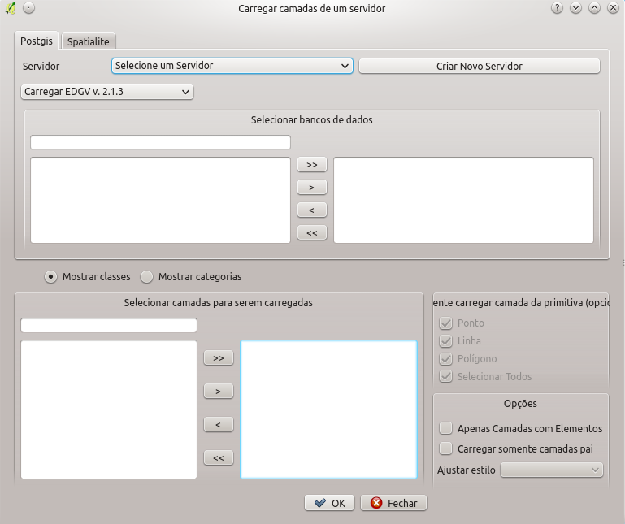
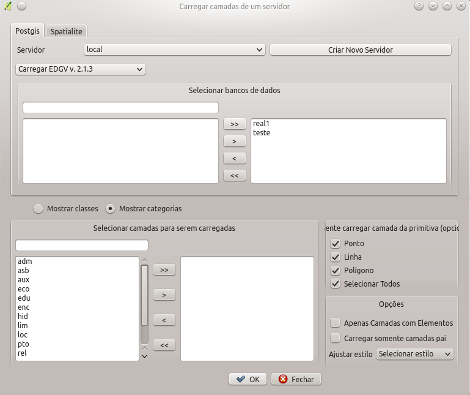
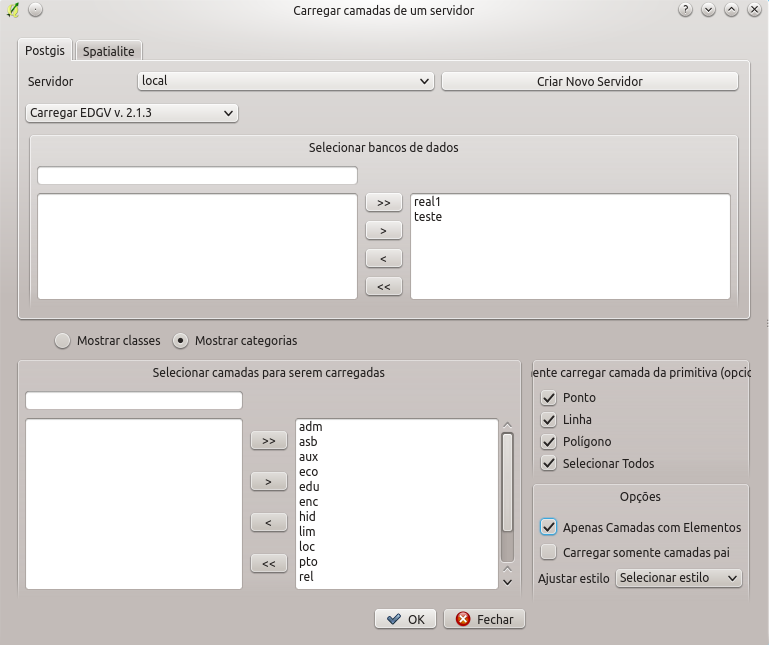

O carregar camadas permite que camadas de diversos bancos de dados sejam carregados simultaneamente. A figura abaixo mostra o diálogo de carregamento vazio.

Inicialmente deve ser feito a seleção dos bancos de dados desejados (podendo ser PostGIS ou Spatialite). Vamos supor o carregamento de camadas de bancos EDGV 2.1.3 para o servidor "local". Isso pode ser visto na figura abaixo.
Podem ser selecionados múltiplos bancos, no caso da figura abaixo serão selecionados os 2 bancos existentes para carregamento. Usando os botões >>, >, <, << é possível, respectivamente, carregar todas os bancos, carregar somente os selecionados, descarregar selecionados e descarregar todos os bancos previamente carregados. Com a seleção, é possível ver logo abaixo a opção de visualização de classes ou categorias. Isso é feito com a marcação de "Mostrar classes" ou "Mostrar categorias". Neste exemplo serão carregadas camadas por categoria como se pode ver na figura abaixo.

Da mesma forma como a seleção de bancos de dados, a seleção de categorias e classes funciona com o uso dos botões >>, >, <, << presentes na parte inferior do diálogo, onde é possível, respectivamente, carregar todas as categorias/classes, carregar somente uma categoria/classe, descarregar uma categoria/classe e descarregar todas as categoria/classe previamente carregadas.
Com a seleção pronta, deve ser definido as primitivas que se desejam carregar, inicialmente todas estão marcadas. Há ainda a possibilidade de se carregar somente camadas com elementos para evitar a carga completa do banco. Também é possível somente carregar camadas pai (camadas do topo da hierarquia conforme previsto na ET-EDGV) e também é possível selecionar estilos, previamente instalados, que se desejam carregar juntamente com as camadas. No caso da figura xx serão carregadas todas as categorias dos bancos selecionados, mas somente as classes que já possuem elementos.
